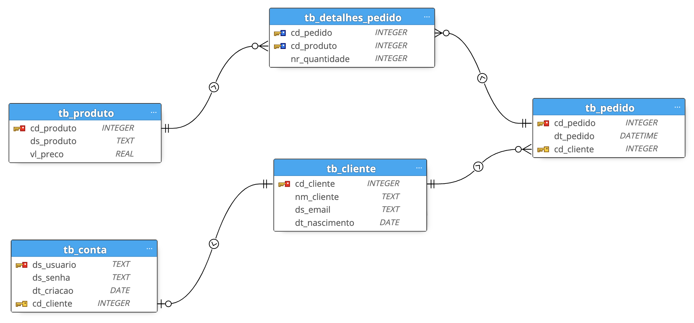

2. Relacionamentos#
Em um banco de dados relacional, as associações entre tabelas são chamadas de relacionamentos. Esses relacionamentos são estabelecidos por meios de atributos (colunas) chave para criar uma estrutura organizada e eficiente para o armazenamento e a recuperação dos dados.
Neste capítulo serão apresentados, por meio de exemplos práticos, os 3 possíveis tipos de relacionamentos entre tabelas. Além disso, serão definidos o que são chaves primária e estrangeira, conceitos fundamentais para compreender os relacionamentos. Os exemplos práticos podem ser reproduzidos facilmente no Jupyter Notebook. Se você não tem familiaridade com SQL, recomendo que leia a subseção Como reproduzir os exemplos?.
2.1. Relacionamento 1:1 (um para um)#
Para exemplificarmos, vamos começar a construir o banco de dados de um sistema de e-commerce, conforme o seguinte Diagrama Entidade-Relacionamento (DER):
{kind=link}
Dica
O DER é uma ferramenta utilizada em projetos de bancos de dados, para representar de forma gráfica a estrutura lógica de um banco de dados. Para saber um pouco mais, leia este artigo.
Neste banco de dados, a tabela tb_cliente deve armazenar os dados pessoais dos clientes desta empresa. Nela, cada cliente cadastrado deve receber um código único, que será armazenado por meio do atributo cd_cliente. Além disso, a tabela deve armazenar nome, e-mail e data de nascimento dos clientes. Para criarmos a tabela, precisamos antes criar e estabelecer conexão com o banco de dados ecom.db:
%load_ext sql
%sql sqlite:///ecom.db
Em seguida, executamos as seguintes instruções SQL para criar a tabela e inserir alguns registros:
%%sql
CREATE TABLE tb_cliente (
cd_cliente INTEGER PRIMARY KEY,
nm_cliente TEXT NOT NULL,
ds_email TEXT NOT NULL,
dt_nascimento DATE
);
INSERT INTO tb_cliente (nm_cliente, ds_email, dt_nascimento) VALUES
('Noel Rosa', 'noelrosa@gmail.com', '1910-12-11'),
('Clara Nunes', 'claranunes@yahoo.com', '1942-08-12'),
('Clementina de Jesus', 'clementinadejesus@yahoo.com', '1901-02-07'),
('Angenor de Oliveira Cartola', 'cartola@gmail.com', '1908-10-11');
* sqlite:///ecom.db
Done.
4 rows affected.
[]
Para visualizarmos os dados da tabela:
%sql SELECT * FROM tb_cliente
* sqlite:///ecom.db
Done.
| cd_cliente | nm_cliente | ds_email | dt_nascimento |
|---|---|---|---|
| 1 | Noel Rosa | noelrosa@gmail.com | 1910-12-11 |
| 2 | Clara Nunes | claranunes@yahoo.com | 1942-08-12 |
| 3 | Clementina de Jesus | clementinadejesus@yahoo.com | 1901-02-07 |
| 4 | Angenor de Oliveira Cartola | cartola@gmail.com | 1908-10-11 |
Observe no código que a restrição PRIMARY KEY é utilizada no atributo cd_cliente. Isto indica que este atributo identifica de forma única os registros da tabela. Em outras palavras, significa que ele é uma chave primária (primary key ou PK).
Continuando, vamos agora criar a tabela tb_conta. Esta tabela deve armazenar os dados de acesso às contas dos clientes. Nela, o atributo ds_usuario, que receberá o nome de usuário dos clientes, será a chave primária. A tabela também terá atributos para armazenar a senha, a data de criação e o código do cliente ao qual a conta pertence.
%%sql
CREATE TABLE tb_conta (
ds_usuario TEXT PRIMARY KEY,
ds_senha TEXT NOT NULL,
dt_criacao DATE NOT NULL,
cd_cliente INTEGER UNIQUE,
FOREIGN KEY (cd_cliente) REFERENCES tb_cliente (cd_cliente)
);
INSERT INTO tb_conta (ds_usuario, ds_senha, dt_criacao, cd_cliente) VALUES
('nrosa', 'conversadebotequim', CURRENT_DATE, 1),
('claran', 'omarserenou', CURRENT_DATE, 2),
('cjesus', 'marinheiroso', CURRENT_DATE, 3),
('cartola', 'precisomeencontrar', CURRENT_DATE, 4);
SELECT * FROM tb_conta
* sqlite:///ecom.db
Done.
4 rows affected.
Done.
| ds_usuario | ds_senha | dt_criacao | cd_cliente |
|---|---|---|---|
| nrosa | conversadebotequim | 2023-08-05 | 1 |
| claran | omarserenou | 2023-08-05 | 2 |
| cjesus | marinheiroso | 2023-08-05 | 3 |
| cartola | precisomeencontrar | 2023-08-05 | 4 |
Observe na criação da tabela que a restrição FOREIGN KEY é utilizada no campo cd_cliente, referenciando o atributo de mesmo nome na tb_cliente. Isto significa que por meio deste atributo é estabelecido um relacionamento entre as duas tabelas. Assim sendo, podemos dizer que enquanto o atributo cd_cliente da tb_cliente é uma chave primária, na tb_conta o atributo cd_cliente é uma chave estrangeira.
Uma vez que um cliente só pode ter uma única conta, e uma conta só pode pertencer a um único cliente, estamos aqui diante do primeiro tipo de relacionament, o 1:1 (um para um).
Abaixo um exemplo de consulta para exibir os nomes dos clientes e seus respectivos nomes de usuário:
%%sql
SELECT
cl.nm_cliente,
co.ds_usuario
FROM tb_cliente as cl
INNER JOIN tb_conta as co
ON cl.cd_cliente = co.cd_cliente
* sqlite:///ecom.db
Done.
| nm_cliente | ds_usuario |
|---|---|
| Noel Rosa | nrosa |
| Clara Nunes | claran |
| Clementina de Jesus | cjesus |
| Angenor de Oliveira Cartola | cartola |
2.2. Relacionamento 1:N (um para muitos)#
Para avançarmos, vamos agora adicionar no banco de dados a tabela tb_pedido. Nesta tabela, onde serão armazenados os pedidos realizados pelos clientes, cd_pedido será a chave primária e cd_cliente, a chave estrangeira para estabelecer o relacionamento com a tb_cliente.
%%sql
CREATE TABLE tb_pedido (
cd_pedido INTEGER PRIMARY KEY,
dt_pedido DATETIME NOT NULL,
cd_cliente INTEGER,
FOREIGN KEY (cd_cliente) REFERENCES tb_cliente (cd_cliente)
);
INSERT INTO tb_pedido (dt_pedido, cd_cliente)
VALUES
('2023-01-08 08:00:00', 2),
('2023-01-15 10:30:00', 1),
('2023-01-30 18:20:00', 4),
('2023-02-12 09:45:00', 3),
('2023-02-20 14:45:00', 1),
('2023-03-05 20:45:00', 4),
('2023-03-10 09:15:00', 1),
('2023-03-18 11:30:00', 2),
('2023-04-05 12:00:00', 1),
('2023-04-25 17:00:00', 3),
('2023-05-06 13:10:00', 2),
('2023-05-22 16:20:00', 1),
('2023-06-15 15:30:00', 3);
SELECT * FROM tb_pedido
* sqlite:///ecom.db
Done.
13 rows affected.
Done.
| cd_pedido | dt_pedido | cd_cliente |
|---|---|---|
| 1 | 2023-01-08 08:00:00 | 2 |
| 2 | 2023-01-15 10:30:00 | 1 |
| 3 | 2023-01-30 18:20:00 | 4 |
| 4 | 2023-02-12 09:45:00 | 3 |
| 5 | 2023-02-20 14:45:00 | 1 |
| 6 | 2023-03-05 20:45:00 | 4 |
| 7 | 2023-03-10 09:15:00 | 1 |
| 8 | 2023-03-18 11:30:00 | 2 |
| 9 | 2023-04-05 12:00:00 | 1 |
| 10 | 2023-04-25 17:00:00 | 3 |
| 11 | 2023-05-06 13:10:00 | 2 |
| 12 | 2023-05-22 16:20:00 | 1 |
| 13 | 2023-06-15 15:30:00 | 3 |
Note que neste relacionamento, um cliente pode realizar muitos pedidos. Por outro lado, um pedido só pode estar associado a um único cliente. Logo, temos agora um relacionamento do tipo 1:N (um para muitos).
Abaixo um exemplo de consulta para exibir a data dos pedidos e o nome dos respectivos clientes:
%%sql
SELECT
p.dt_pedido,
c.nm_cliente
FROM tb_pedido as p
INNER JOIN tb_cliente as c
ON p.cd_cliente = c.cd_cliente
* sqlite:///ecom.db
Done.
| dt_pedido | nm_cliente |
|---|---|
| 2023-01-08 08:00:00 | Clara Nunes |
| 2023-01-15 10:30:00 | Noel Rosa |
| 2023-01-30 18:20:00 | Angenor de Oliveira Cartola |
| 2023-02-12 09:45:00 | Clementina de Jesus |
| 2023-02-20 14:45:00 | Noel Rosa |
| 2023-03-05 20:45:00 | Angenor de Oliveira Cartola |
| 2023-03-10 09:15:00 | Noel Rosa |
| 2023-03-18 11:30:00 | Clara Nunes |
| 2023-04-05 12:00:00 | Noel Rosa |
| 2023-04-25 17:00:00 | Clementina de Jesus |
| 2023-05-06 13:10:00 | Clara Nunes |
| 2023-05-22 16:20:00 | Noel Rosa |
| 2023-06-15 15:30:00 | Clementina de Jesus |
2.3. Relacionamento N:N (muitos para muitos)#
Para demonstrar o terceiro e último tipo de relacionamento, vamos começar criando a tb_produto. Nesta tabela, que armazenará os produtos cadastrados no sistema, o atributo cd_produto será a chave primária. Além disso, criaremos atributos para a descrição do produto, a categoria e o preço.
%%sql
CREATE TABLE tb_produto (
cd_produto INTEGER PRIMARY KEY,
ds_produto TEXT NOT NULL,
vl_preco REAL NOT NULL
);
INSERT INTO tb_produto (ds_produto, vl_preco) VALUES
('Smartphone X', 3600.00),
('Fones de Ouvido Y', 120.00),
('Sofá Conforto', 2300.00),
('Aspirador de Pó', 300.00);
SELECT * FROM tb_produto
* sqlite:///ecom.db
Done.
4 rows affected.
Done.
| cd_produto | ds_produto | vl_preco |
|---|---|---|
| 1 | Smartphone X | 3600.0 |
| 2 | Fones de Ouvido Y | 120.0 |
| 3 | Sofá Conforto | 2300.0 |
| 4 | Aspirador de Pó | 300.0 |
É natural pensarmos que um pedido pode conter um ou mais produtos, ao passo que um produto pode estar associado a um ou mais pedidos. Neste caso, temos um relacionamento do tipo N:N (muitos para muitos). No entanto, não é possível estabelecer este tipo de relacionamento de maneira direta, como nos dois exemplos anteriores. Assim sendo, criaremos a tabela tb_detalhes_pedido para associar os produtos, bem como as quantidades compradas, aos seus respectivos pedidos.
%%sql
CREATE TABLE tb_detalhes_pedido (
cd_pedido INTEGER,
cd_produto INTEGER,
nr_quantidade INTEGER NOT NULL,
PRIMARY KEY (cd_pedido, cd_produto),
FOREIGN KEY (cd_pedido) REFERENCES tb_pedido (cd_pedido),
FOREIGN KEY (cd_produto) REFERENCES tb_produto (cd_produto)
);
INSERT INTO tb_detalhes_pedido (cd_pedido, cd_produto, nr_quantidade)
VALUES
(1, 1, 1),
(1, 4, 2),
(2, 2, 1),
(3, 1, 1),
(3, 2, 2),
(3, 3, 1),
(4, 4, 1),
(5, 1, 1),
(5, 4, 2),
(6, 2, 1),
(7, 3, 1),
(7, 2, 2),
(8, 4, 1),
(9, 1, 1),
(9, 4, 2),
(10, 2, 1),
(11, 3, 1),
(11, 2, 2),
(12, 4, 1),
(13, 1, 1),
(13, 4, 2);
SELECT * FROM tb_detalhes_pedido
LIMIT 10
* sqlite:///ecom.db
Done.
21 rows affected.
Done.
| cd_pedido | cd_produto | nr_quantidade |
|---|---|---|
| 1 | 1 | 1 |
| 1 | 4 | 2 |
| 2 | 2 | 1 |
| 3 | 1 | 1 |
| 3 | 2 | 2 |
| 3 | 3 | 1 |
| 4 | 4 | 1 |
| 5 | 1 | 1 |
| 5 | 4 | 2 |
| 6 | 2 | 1 |
Vamos analisar a esrutura desta tabela. Observe que a chave primária é composta pelos atributos cd_pedido e cd_produto. Isto significa que a combinação destes dois atributos identificam o registro de forma única. Quando a chave primária é composta por mais de uma atributo, também dizemos que ela é uma chave composta. Além disso, observe que há um relacionamento do tipo 1:N com a tb_pedido, por meio do atributo cd_pedido, e um relacionamento do tipo 1:N com a tb_produto, por meio od atributo cd_produto, que em conjunto configuram o relacionamento N:N entre tb_pedido e tb_produto.
Abaixo um exemplo de consulta para exibir os produtos de cada pedido, bem como o preço unitário, a quantidade pedida e o preço total:
%%sql
SELECT
pe.cd_pedido,
pe.dt_pedido,
pr.ds_produto,
pr.vl_preco,
dp.nr_quantidade,
pr.vl_preco * dp.nr_quantidade as total
FROM tb_detalhes_pedido as dp
INNER JOIN tb_pedido as pe
ON dp.cd_pedido = pe.cd_pedido
INNER JOIN tb_produto as pr
on dp.cd_produto = pr.cd_produto
LIMIT 10
* sqlite:///ecom.db
Done.
| cd_pedido | dt_pedido | ds_produto | vl_preco | nr_quantidade | total |
|---|---|---|---|---|---|
| 1 | 2023-01-08 08:00:00 | Smartphone X | 3600.0 | 1 | 3600.0 |
| 1 | 2023-01-08 08:00:00 | Aspirador de Pó | 300.0 | 2 | 600.0 |
| 2 | 2023-01-15 10:30:00 | Fones de Ouvido Y | 120.0 | 1 | 120.0 |
| 3 | 2023-01-30 18:20:00 | Smartphone X | 3600.0 | 1 | 3600.0 |
| 3 | 2023-01-30 18:20:00 | Fones de Ouvido Y | 120.0 | 2 | 240.0 |
| 3 | 2023-01-30 18:20:00 | Sofá Conforto | 2300.0 | 1 | 2300.0 |
| 4 | 2023-02-12 09:45:00 | Aspirador de Pó | 300.0 | 1 | 300.0 |
| 5 | 2023-02-20 14:45:00 | Smartphone X | 3600.0 | 1 | 3600.0 |
| 5 | 2023-02-20 14:45:00 | Aspirador de Pó | 300.0 | 2 | 600.0 |
| 6 | 2023-03-05 20:45:00 | Fones de Ouvido Y | 120.0 | 1 | 120.0 |